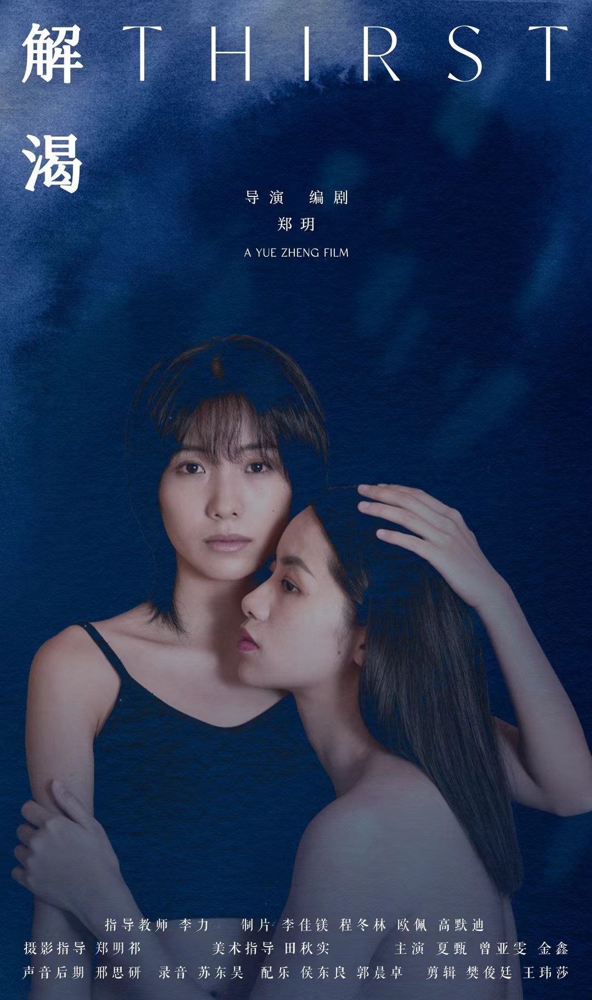

Awareness

The second work marks the turning point of the project, where restoration begins to emerge through sustained attention to the coastal environment. Piano, strings and field recordings of waves, wind and seabirds form the core of the piece.
A continuously repeating ascending piano motif represents the waves, while the harmonic and textural development documents a gradual shift in attention and inner awareness.